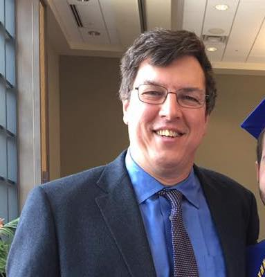
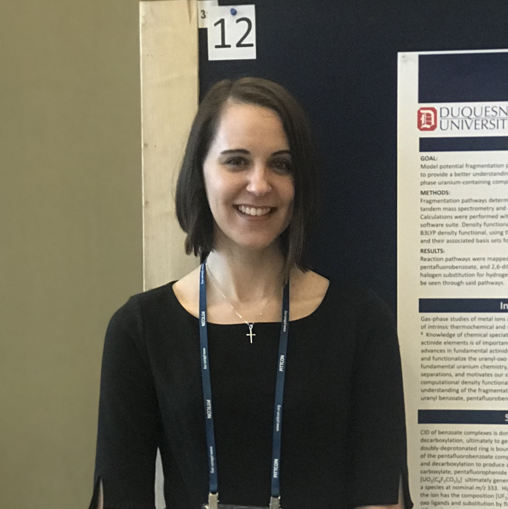
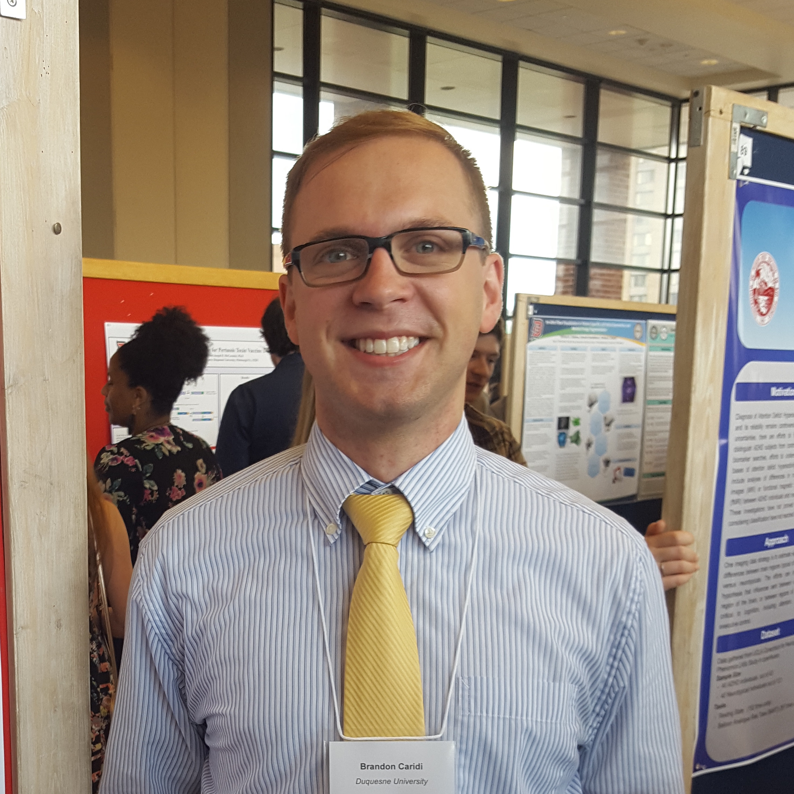
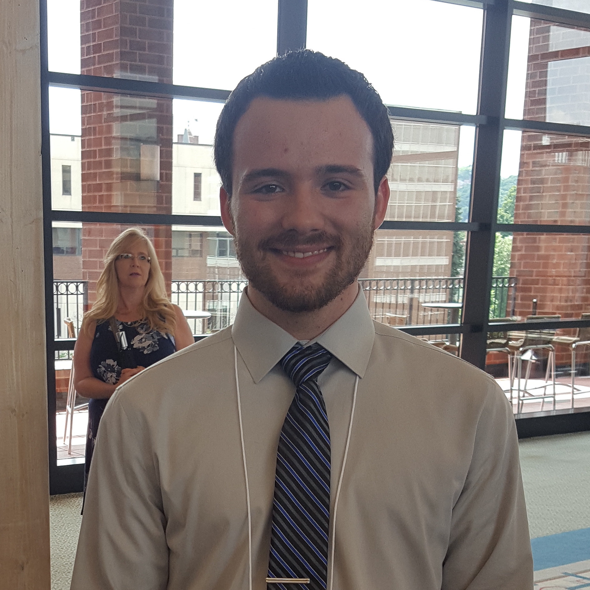
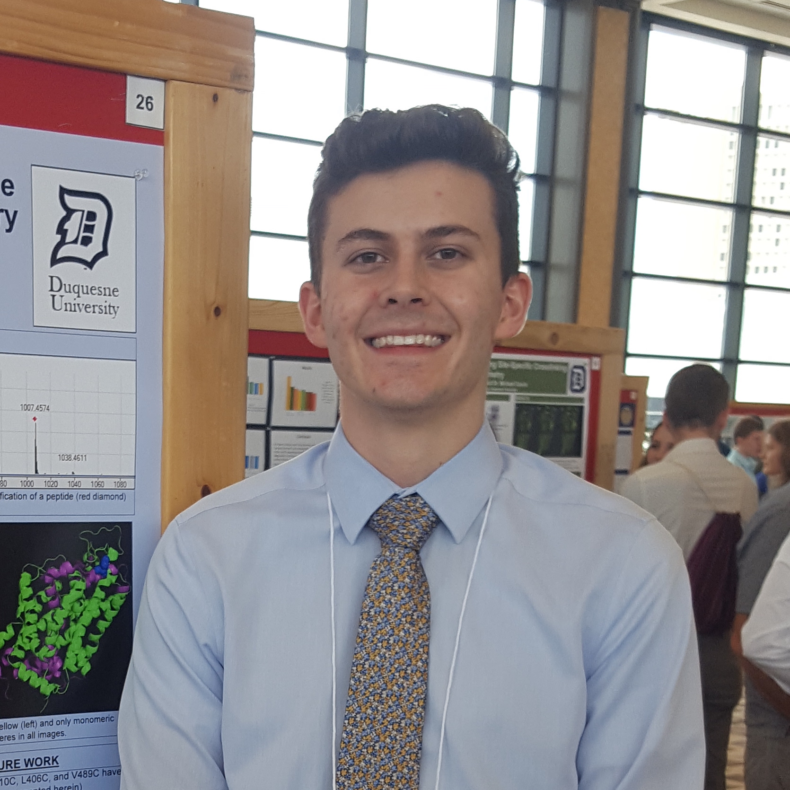
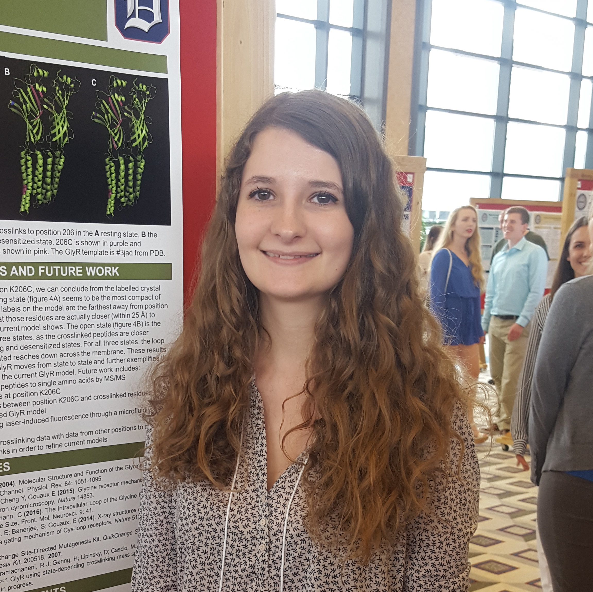
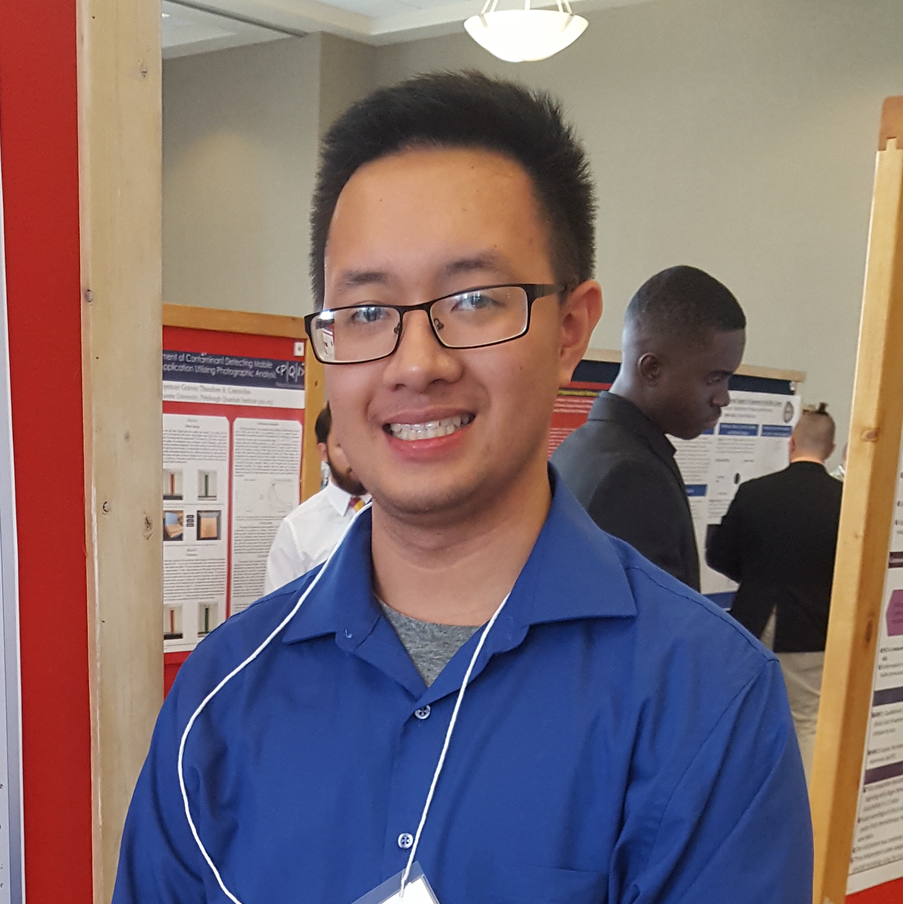

People of the Cascio Lab
We are a cool group of kids. We do awesome science. We also play laser tag and do other fun stuff like that. Let us tell you a little bit about ourselves:
Principal Investigator
Dr. Michael Cascio
Dr. Cascio is a cool guy. He lives in Highland Park with his family and enjoys vacationing in California.

Graduate Students
Elizabeth Castellano
Liz is a sixth-year graduate student. Her project is using crosslinking mass spectrometry studies to identify distance constrains and generate refined models of SERT. She grew up in El Paso Texas, moved to Columbus Ohio at the age of 15 then moved to Pittsburgh in 2013 to start grad school. Liz got married in August 2013 and gave birth to her daughter Diana Evelyn in January 6th 2017. She enjoys spending time with her family and playing with her daughter. She likes watching movies specifically action and romantic comedies. She likes almost any sport and enjoys riding her bike.
Nicholas Ferraro
Nick is a fifth-year graduate student in the Cascio Lab. His project looks at cholesterol interactions with the glycine receptor in different allosteric states using tandem mass spectrometry. Nick earned his undergraduate degree from Washington and Jefferson College. He enjoys running the mass spectrometer and finding different ways to utilize the instrument to solve problems. Outside the lab, Nick enjoys working on his cars, exercising, and enjoying nature. He enjoys traveling around the region to different parks and attractions. He hopes to one day be able to use the skills he learned at Duquesne to help make a difference.
Kayce Tomcho
Kayce is a fourth-year graduate student in the Cascio Lab. Her project entails refining allostery and the structure of the glycine receptor by using systematic single-cysteine mutations and crosslinking-mass spectrometry. She would like to use her degree to teach biochemistry and immunology at an undergraduate institution. Kayce is originally from Corry, Pennsylvania and received her undergraduate degree from Slippery Rock University. Outside of Duquesne, Kayce is a supporter of the World Wildlife Fund, The Ocean Conservancy, and the ASPCA. Her very favorite thing is her cat, Kat. In her spare time, she enjoys reading and writing, music (especially Billy Joel), gardening, arts-and-craft-type-things, and sometimes, running.

Undergraduate Students
Brandon Caridi
Brandon is currently a senior at Duquesne University majoring in Chemistry and minoring in Mathematics. He is from Hampton Township, Pennsylvania (about 10 miles north of Pittsburgh). He has been a member of the Cascio Research Group since the Fall 2017 semester and is conducting research on the serotonin transporter. Brandon is a fan of movies, the Pittsburgh Pirates, and endlessly quoting TV shows to his classmates and lab partners. He is planning on going to graduate school for a M.S. Degree in Medicinal Chemistry.

Bailey Curran
Bailey Curran is currently a senior at Duquesne, majoring in Biochemistry and minoring in Mathematics. He is from Greensburg, PA. Bailey has worked in the Cascio research group since the spring 2017 on the serotonin transporter project. He enjoys playing golf in his free time. He is planning on going to LECOM for medical school after graduating.

Adam Gargano
Nunc lacinia ante nunc ac lobortis. Interdum adipiscing gravida odio porttitor sem non mi integer non faucibus ornare mi ut ante amet placerat aliquet. Volutpat commodo eu sed ante lacinia. Sapien a lorem in integer ornare praesent commodo adipiscing arcu in massa commodo lorem accumsan at odio massa ac ac. Semper adipiscing varius montes viverra nibh in adipiscing blandit tempus accumsan.

Hannah Gering
Hannah Gering is a senior biochemistry major. She works in Dr. Cascio’s lab studying the glycine receptor. In her spare time, she enjoys going camping and hiking. She has a passion for science and cats. She one day hopes to own a cat farm.

Alexis Andre Orbeta
Andre is a junior biochemistry major at Duquesne University and is minoring in math. He is from Harrisburg, PA. Andre has worked with the Cascio research group on the crosslinking studies of the serotonin transporter. He played tennis back in high school enjoys hitting with his dad and friends back home. He also recently started a ballroom dance club at Duquesne with the help of a local instructor because of difficulty to access tennis courts in Pittsburgh.
